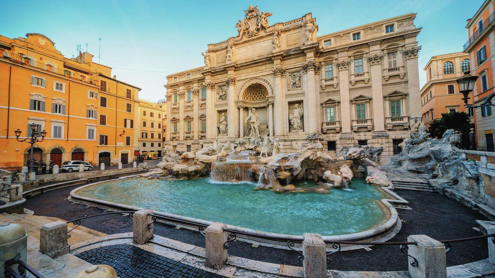

La Fontana di Trevi: El Triunfo del Agua y la Piedra
El Origen de una Obra Maestra Barroca
Aunque la espectacular fachada que vemos hoy fue inaugurada en el siglo XVIII, el origen de la Fontana di Trevi se remonta muchísimo más atrás, directamente a la época del Imperio Romano. La fuente se sitúa en el punto final del Aqua Virgo, un acueducto construido en el año 19 a.C. que transportaba agua pura desde manantiales lejanos hasta el corazón de la ciudad. Durante siglos, este rincón sirvió simplemente como un pilón de agua común hasta que el Papa Clemente XII, en el año 1730, decidió organizar un concurso público para construir una estructura monumental que celebrara la llegada del agua a la ciudad.
El diseño ganador perteneció al arquitecto Nicola Salvi, quien concibió una de las mayores expresiones del arte barroco en el mundo. Tallada directamente sobre la fachada del Palacio Poli, la fuente utiliza el mármol travertino para escenificar una impresionante alegoría marina. En el centro de la composición se destaca la figura imponente del dios Océano, quien avanza subido a un carro con forma de concha tirado por dos caballos alados guiados por tritones. Uno de los animales se muestra encabritado y salvaje, mientras que el otro se ve completamente dócil, una metáfora visual que Salvi utilizó para representar los estados cambiantes y la fuerza impredecible del mar.
Mitos Modernos y Tradición Turística
En la actualidad, la Fontana di Trevi es mucho más que un monumento histórico; es un fenómeno cultural que atrae a miles de visitantes a cada hora del día y de la noche. Su fama mundial se consolidó a mediados del siglo XX gracias al cine clásico, especialmente con la icónica escena de la película La Dolce Vita de Federico Fellini, donde los protagonistas se sumergen en sus aguas cristalinas bajo la luz de la luna, transformando el lugar en el símbolo definitivo del romance romano.
Ese misticismo dio paso a una de las tradiciones viajeras más famosas del mundo: el lanzamiento de monedas. El mito dicta que si una persona arroja una moneda de espaldas a la fuente y con la mano derecha sobre el hombro izquierdo, se asegura su regreso a la Ciudad Eterna. Si se lanzan dos monedas, la recompensa será encontrar el amor con un italiano o italiana, y si se tiran tres, se garantiza un matrimonio. Esta costumbre es tan popular que cada noche se recogen miles de euros del fondo de la fuente, un dinero que se destina íntegramente a organizaciones benéficas de Roma para ayudar a las familias más necesitadas.
Galería de Imágenes: Fontana di Trevi
